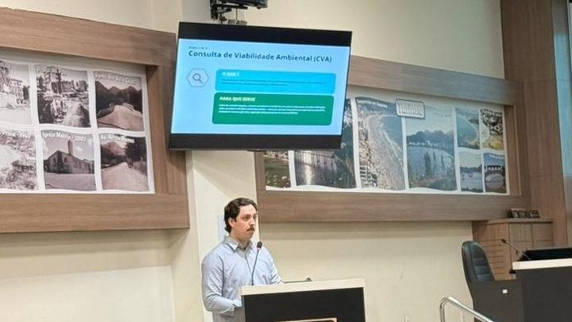

Itapema · Poder Público
Itapema · Poder PúblicoItapema assinou o contrato do concurso público com a FURB por R$ 593,6 mil, e a conta sobe se passar de 6 mil inscritos
O contrato que esta errata corrige, com a tabela de preço por faixa de inscritos.
A Prefeitura de Itapema publicou no Diário Oficial dos Municípios, em 6 de outubro, a Errata nº 01 da dispensa que contratou a FURB para organizar o concurso público. O documento troca 29 cargos por 31 em sete pontos do processo. Os dois que entram são arquiteto e engenheiro civil, com uma vaga cada, 30 horas semanais, salário inicial de R$ 8.686,63 e taxa de inscrição de R$ 150. Nas mesmas duas horas daquela tarde saiu também a Lei 5151, que passa a exigir diploma de curso superior do fiscal da vigilância sanitária, outro dos cargos do concurso. O edital de abertura ainda não saiu.
Em 30 segundos · Modo de Leitura, formato original Santa Informa
Itapema vai fazer concurso público.
É para cargo efetivo, de carteira estável.
Em 23 de setembro a Prefeitura contratou a FURB.
O contrato é de R$ 593.649,00.
Ele vale para até 6.000 inscritos.
Na época, o concurso tinha 29 cargos.
Cinco dias depois veio um memorando.
É o Memorando 7.133/2026, de 28 de setembro.
Ele mandou retificar o termo de referência.
A errata saiu em 6 de outubro.
Agora o concurso tem 31 cargos.
Entraram dois.
Arquiteto e engenheiro civil.
Uma vaga cada um.
Jornada de 30 horas por semana.
Salário inicial de R$ 8.686,63.
Taxa de inscrição de R$ 150.
O arquiteto precisa de registro no CAU/SC.
O engenheiro precisa de registro no CREA/SC.
A estimativa de inscritos não mudou.
Continua em até 6.000.
Então o preço do contrato também não muda.
A errata só mostra a tabela de nível superior.
Nela são 18 cargos agora, com 23 vagas.
Essas duas somas são contas nossas.
A maior é fisioterapeuta, com 5 vagas.
Depois vem endocrinologista, com 2.
Todo o resto tem 1 vaga.
No mesmo 6 de outubro saiu a Lei 5151.
Ela muda cinco cargos efetivos da Prefeitura.
O fiscal da vigilância sanitária passa a exigir faculdade.
Serve Engenharia Sanitária e Ambiental, Farmácia, Bioquímica ou Enfermagem.
E registro no conselho da profissão.
Esse cargo também está no concurso.
O salário inicial dele é R$ 8.686,63.
O mesmo dos dois cargos novos.
O fiscal de posturas fica em R$ 5.094,13, com 10 vagas.
O técnico contábil, em R$ 7.959,15, com 7 vagas.
Até esta matéria, o edital do concurso não saiu.
Poder PúblicoPublicada em Redação Santa Informa
Em 23 de setembro Itapema assinou com a FURB o contrato de R$ 593.649,00 para organizar seu concurso público, como mostramos no dia seguinte. O desenho do certame, naquela data, tinha 29 cargos e estimativa de até 6.000 inscrições homologadas. Cinco dias depois, em 28 de setembro, o Memorando 7.133/2026 pediu retificação e complementação do termo de referência. O resultado saiu em 6 de outubro, às 18h14, no Diário Oficial dos Municípios: a Errata nº 01 troca 29 por 31 em sete pontos do processo, do estudo técnico preliminar à planilha de quantitativos.
Os dois cargos que entram estão num anexo de duas linhas, no fim do documento. São o 1153, arquiteto, que exige graduação em arquitetura e registro no CAU/SC, e o 1156, engenheiro, que exige graduação em Engenharia Civil e registro no CREA/SC. Nas duas linhas aparecem jornada de 30 horas semanais, uma vaga, nenhuma vaga reservada, salário inicial de R$ 8.686,63 e taxa de inscrição de R$ 150.
A errata reproduz uma tabela só, a de nível superior. Com os dois cargos novos, ela fica com 18 cargos e 23 vagas, somas nossas sobre a lista publicada. A maior oferta é de fisioterapeuta, com 5 vagas, seguida de médico endocrinologista, com 2. Todos os outros têm uma vaga: advogado do CREAS, contador, fiscal da vigilância sanitária, quatro especialidades médicas, três cargos de professor, intérprete de Libras, técnico em hotelaria e turismo, terapeuta ocupacional, veterinário e agora arquiteto e engenheiro. Os cargos dos níveis operacional, fundamental e médio existem, o documento diz que existem, mas não aparecem na errata.
Um detalhe de dinheiro: a estimativa de inscritos segue em até 6.000, e é ela que define a faixa de preço do contrato. Dois cargos a mais, pelo texto publicado, não mexem no valor contratado.
Duas horas antes da errata, às 16h03 de 6 de outubro, a Prefeitura publicou a Lei 5151, que altera a estrutura administrativa. Ela mexe em cinco cargos efetivos, e um deles também está na lista do concurso: o fiscal da vigilância sanitária, que passa a exigir graduação em Engenharia Sanitária e Ambiental, Farmácia, Bioquímica ou Enfermagem, com registro no conselho. O quadro de vencimentos da lei põe esse cargo em R$ 8.686,63, 30 horas, o mesmo patamar do arquiteto e do engenheiro. Na mesma lei, o fiscal de posturas fica com 10 vagas e salário inicial de R$ 5.094,13, o técnico contábil com 7 vagas e R$ 7.959,15, o técnico judiciário com 3 vagas e R$ 8.305,00 e o veterinário com 5 vagas e R$ 8.686,63.
O resumo de 30 segundos está no topo e a versão completa é o texto acima. Aqui ficam as três leituras da casa sobre o mesmo assunto.
Clara, a otimista
Arquiteto e engenheiro civil efetivos numa cidade que não para de levantar prédio é notícia boa, e das concretas. Quem já esperou parecer de projeto sabe que análise técnica depende de gente com carimbo, e carimbo de servidor concursado não vai embora na troca de gestão. Duas vagas não resolvem a fila sozinhas, mas é melhor ter do que não ter.
Gosto também de ver a correção chegando antes da prova, e não depois. Memorando em 28 de setembro, errata em 6 de outubro, tudo publicado em diário oficial, com data e assinatura. Mudança de última hora em edital já aberto é que costuma dar dor de cabeça em candidato.
Seu Prudêncio, o criterioso
Merece atenção a lista que não está publicada. O documento afirma que o concurso tem 31 cargos distribuídos entre os níveis operacional, fundamental, médio e superior, mas a errata só reproduz a tabela do nível superior. Quem quiser saber quantas vagas de operacional ou de nível médio a cidade vai abrir não tem onde olhar hoje. Uma sugestão útil seria publicar o Anexo I inteiro, já com os 31 cargos, antes do edital.
Vale acompanhar também a divergência entre os dois anexos da Lei 5151. O fiscal da vigilância sanitária aparece com nível 10 a 24 no anexo de atribuições e com referência A-07 a H-21 no quadro de vencimentos. Os outros quatro cargos batem. Pode ser erro de digitação, pode ser critério diferente, e em qualquer dos dois casos o concurso vai usar esse cargo. Resolver isso antes do edital custa pouco.
E o lado bom precisa ser dito. Corrigir o termo de referência por errata publicada, citando o memorando que originou a mudança, é o jeito certo de fazer. A Administração podia ter mudado a planilha em silêncio e não mudou.
Caco, o sarcástico
Leio a errata inteira e ela troca o número 29 pelo número 31 sete vezes, em parágrafos que dizem praticamente a mesma coisa em lugares diferentes do processo. É o documento mais repetitivo que eu li este mês, e olha que eu li a LDO.
Reclamação registrada: a parte que interessa, que é a lista dos 31 cargos com vaga e salário, essa não veio. Veio o aviso de que ela mudou. É como receber o recibo sem a compra.
Mas tá bom. Itapema vai concursar arquiteto e engenheiro, R$ 8.686,63 para começar, 30 horas por semana e registro no conselho. Numa cidade feita de planta aprovada, contratar quem lê planta parece uma ideia que devia ter vindo antes. Veio agora, e progresso é isso.
Fontes: a mudança de 29 para 31 cargos, a entrada do arquiteto e do engenheiro, os códigos 1153 e 1156, as 30 horas, a vaga única, os R$ 8.686,63, os R$ 150 de taxa, as exigências de registro no CAU/SC e no CREA/SC, a estimativa de até 6.000 inscrições, as 30 questões da prova objetiva, a tabela de nível superior e o Memorando 7.133/2026 estão na Errata nº 01 do Processo Licitatório 142.2026, Dispensa de Licitação 05.038.2026, publicada pela Prefeitura de Itapema no Diário Oficial dos Municípios de Santa Catarina em 6 de outubro de 2026, às 18h14, e assinada pelo secretário municipal de Administração. A exigência de graduação para o fiscal da vigilância sanitária, os vencimentos e as vagas de fiscal de posturas, técnico contábil, técnico judiciário e veterinário, e a divergência de nível entre os anexos estão na Lei nº 5151, de 6 de outubro de 2026, publicada às 16h03 do mesmo dia. O Contrato 159/2026 com a FURB, de R$ 593.649,00, e a tabela de preço por faixa de inscritos estão em Itapema assinou o contrato do concurso público com a FURB por R$ 593,6 mil. As somas de 18 cargos, de 23 vagas de nível superior, dos 5 dias entre contrato e memorando e dos 13 dias entre contrato e errata são contas nossas sobre esses documentos, conferidas em 15 de outubro de 2026. A ausência de edital de abertura foi conferida em busca por publicações da Prefeitura de Itapema no Diário Oficial dos Municípios de Santa Catarina, em 15 de outubro de 2026.
Itapema · Poder PúblicoO contrato que esta errata corrige, com a tabela de preço por faixa de inscritos.
 Itapema · Poder Público
Itapema · Poder PúblicoA outra porta de contratação da Prefeitura, que corre em paralelo ao concurso.

Itapema · Meio AmbienteA fila de análise técnica que arquiteto e engenheiro efetivos vão encontrar.